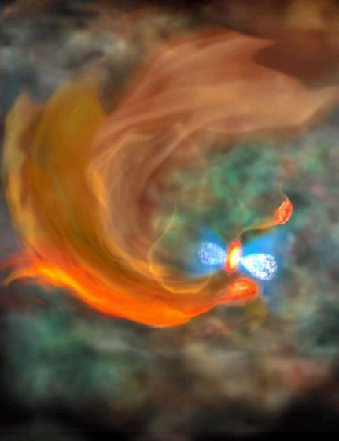

人类首次观测到星球种子：万年后或诞生新星

以ALMA电波望远镜的观测结果为基础描绘的想象图。在被蓝色气体云夹着的原始星(刚刚诞生的星体)下部，红色团块为“星体的种子”。
国际在线专稿：据日本《朝日新闻》7月3日报道，日本国立天文台等机构发布消息称，在金牛座方向观测到构成星体材料的气体形成了高密度团块，处于“星球种子”状态。这是世界首次观测到这种状态，预计再过一万年左右，会产生一颗新星。
大阪府府立大学研究生院的博士生德田一起等人，通过红外望远镜在金牛座方向确认一颗刚刚诞生的星体。为观察这颗星体的成长情况，又使用世界上最大的ALMA电波望远镜，观测同一位置。
结果发现了另一个用红外望远镜没能看到的气体团块。这一团块密度非常高，可以与太阳形成所需条件相匹敌，因此观测人员认为该团块处于星体诞生之前的“种子”状态。
星体在诞生时，作为其材料的气体和尘埃应如何分布等所需条件目前尚不明确。德田一起说：“我们将提高分辨率继续观测，希望能够算出星体诞生所需气体的质量等，弄清星体形成过程。”